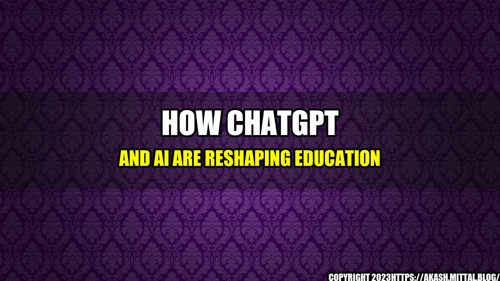

 Once upon a time, there was a girl named Emily, who wanted to learn a new language. However, she had a busy schedule and couldn't dedicate enough time to attend traditional language classes. She was almost about to give up her dream of becoming multilingual, but then she found out about a language learning app that used chatbots to teach languages. She downloaded the app and started learning. In just a few months, she became fluent in the language. This was possible because of the use of chatbots, and Artificial Intelligence (AI) which made learning a language much more accessible and convenient for her.
How ChatGPT and AI are changing Education
The world of education is rapidly changing. AI, chatbots, and other advanced technologies are playing a significant role in shaping it. These technologies are making education accessible, affordable and personalized. Here are some examples of how ChatGPT and AI are reshaping education.
Personalized Learning
AI and chatbots can analyze the learning data of students. Based on the data, they can create personalized learning plans for students. They can adapt to the students' needs and preferences, and provide them with the content that meets their requirements. This approach of personalized learning can improve learning outcomes and, at the same time, increase student motivation. An example of an AI-based personalized learning platform is Duolingo. Duolingo uses AI to analyze your strengths and weaknesses in a language and creates personalized learning plans for students. In this way, Duolingo provides them with relevant and useful content, and it adapts itself to their learning progress.
Intelligent Tutoring Systems
Intelligent tutoring systems (ITS) are computer-based learning systems that interact with students, provide feedback, and adapt to their needs. ITS is a subset of AI that can identify the gaps in students' knowledge and provide them with remedial actions. An example of an ITS is Carnegie Learning's "MATHia". The system evaluates students' mathematical abilities, identifies their learning gaps, and provides them with personalized feedback and guidance. This system has proven to be effective in improving students' math skills and increasing their engagement.
Chatbots in Education
Chatbots are computer programs that can simulate conversations with humans. Chatbots can answer questions, provide insights, and provide immediate feedback, making them ideal for education. An example of a chatbot is Squirrel AI. Squirrel AI is an AI-powered tutoring system that uses chatbots to interact with students. The chatbot can answer students' queries, provide feedback, and help them with their homework. The system uses AI algorithms to analyze the student's performance and adjust the content accordingly.
Conclusion
The use of ChatGPT and AI has revolutionized the education system. These technologies are making education accessible, affordable, and personalized. The use of personalized learning, intelligent tutoring systems, and chatbots are the future of education. Here are three points to summarize how ChatGPT and AI can change education: - AI and chatbots can provide personalized learning plans that are tailored to students' requirements. This personalization can increase motivation and, at the same time, improve learning outcomes. - Intelligent Tutoring Systems can identify gaps in students' knowledge and provide them with remedial actions, which can enhance their learning progress. - Chatbots can answer students' questions, provide insights, and give immediate feedback, which can transform the learning process and make it more interactive. References and Hashtags References: - https://www.forbes.com/sites/tomvanderark/2021/06/23/artificial-intelligence-is-transforming-education-these-nine-schools-are-showing-how/?sh=6f454fd537a2 - https://www.researchgate.net/publication/341774547_Intelligent_tutoring_systems_a_comprehensive_survey - https://elearningindustry.com/topics/artificial-intelligence/chatbots Hashtags: #ChatGPT #AI #Education #PersonalizedLearning #IntelligentTutoringSystems #ChatbotsInEducation Article category: Education Technology
Curated by Team Akash.Mittal.Blog
Share on Twitter Share on LinkedIn